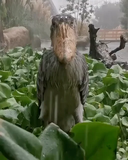

Javascripti Ülesanded
Ülesanne 2
Ülesanne 3
Ülesanne 4
Ülesanne 5
Ülesanne 6
Ülesanne 7
Ülesanne 8
Ülesanne 9
Ülesanne 10
Ülesanne 11
Ülesanne 12
Ülesanne 13
Ülesanne 14
Ülesanne 15
Ülesanne 16
Ülesanne 17
Ülesanne 18
Ülesanne 19
Ülesanne 20
Ülesanne 21
Ülesanne 22
Ülesanne 23
Harjutused
Struktuur
Loetelud
Siseviide
Markeerimine
Rühma leht
CSS paragraafid
Legomees
Metsheina harjutused
Harjutus 2
Harjutus 3
Harjutus 4
Harjutus 5
Harjutus 6
Wordpress
Portfolio
Lokomotiiv
Arendustsüklid
Waterfall
Incremental
Spiral
Prototype
Mel Kosk TARpe23
